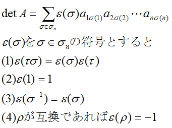

ε(σ)を σ∈σ_n の符号とすると
\((1)\ \varepsilon(\tau\sigma)=\varepsilon(\sigma)\varepsilon(\tau)\)
\((2)\ \varepsilon(1)=1\)
\((3)\ \varepsilon(\sigma^{-1})=\varepsilon(\sigma)\)
\((4)\ \rho\text{が互換であれば}\varepsilon(\rho)=-1\)